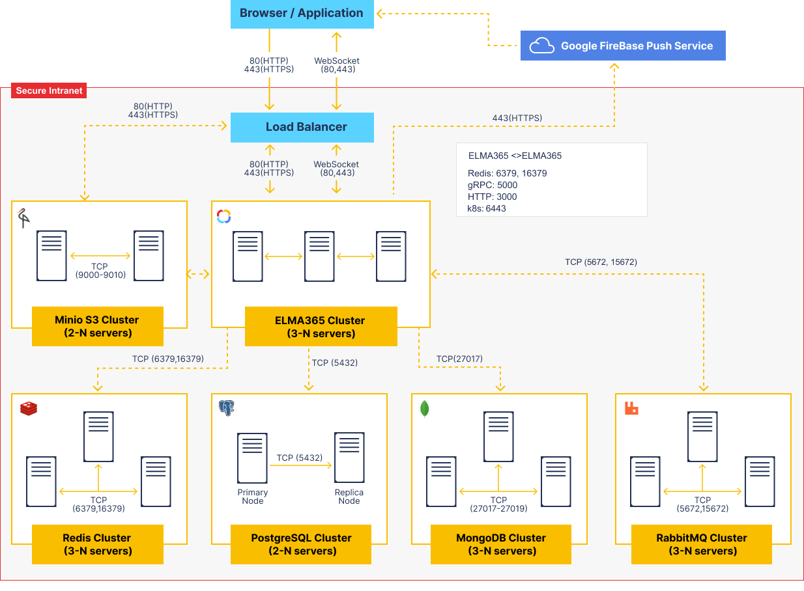

В статье приводится схема протоколов и портов общения между отдельными серверами системы ELMA365. Она же является принципиальной схемой масштабирования и построения отказоустойчивого кластера.
Отдельные узлы сервисов хранения и обработки данных (PostgreSQL, MongoDB, RabbitMQ, Redis, MinIO S3) имеют свои правила масштабирования и построения отказоустойчивой схемы. Подробнее об этом читайте в статье «Системные требования ELMA365 On-Premises Enterprise».
Приложение ELMA365 состоит из множества сервисов в изолированных контейнерах и работает в среде управления Kubernetes.

Список сервисов внутри кластера приложения ELMA365
aspose-actions |
Шаблонизатор текста и офисных документов с использованием DSL. Применяется также для сравнения файлов, наложения водяных знаков и конвертации документов. |
auth |
Сервис авторизации и управления группами, пользователями и оргструктурой. |
babysitter |
Сервис управления пользовательскими микросервисами. Позволяет добавлять в модули переносимые сервисы, которые при включении модуля запускают в кластере сторонние микросервисы. |
balancer |
Сервис управления мультитенантностью в редакции Private Cloud. |
calculator |
Сервис для расчёта формул в элементах приложений. |
chat |
Сервис приватных и групповых сообщений чатов. |
collector |
Чтение и фильтрация элементов приложений. |
contractor |
Сервис для работы компонента Контракт. |
convertik |
Конвертация документов в формат .pdf. |
crm |
Сервис для работы с функциональными возможностями CRM. |
deploy |
Управление миграциями данных и конфигурации при обновлении платформы. |
diskjockey |
Работа с файлами и директориями. |
docflow |
Работа с листами согласования, ознакомления и документооборотом. |
dup-detector |
Сервис для настройки поиска дублей и обработки результатов. |
elmabot-proxy |
Сервис для интеграции с ELMA Bot (с авторизацией с помощью OIDC или X-Token). |
event-bus** |
Сервис отслеживания и обработки событий системы. Работает с шиной событий. |
exchange |
Сервис для управления компонентами системы, создания, экспорта, импорта и обновления их версий. |
feeder |
Работа с лентой пользователя и в приложениях, работа с каналами. |
fileprotection |
Сервис, позволяющий получать файл по ссылке только авторизованному пользователю с учётом прав доступа к файлу. |
front |
Клиентская часть ELMA365. Статика, стили, скрипты. |
hydra-adaptor |
Сервис-адаптер между ORY Hydra и ELMA365. Используется для реализации роли identity provider в интеграции с ELMA Bot. |
integrations |
Сервис работы с внешними интеграциями и пользовательскими модулями. |
lowcodecd |
Сервис для настройки и автоматизации переноса компонентов конфигурации между компаниями. |
mailer |
Отправка почты из системы. |
main |
Основной API-шлюз, который перенаправляет запросы к другим внутренним сервисам. |
messengers* |
Сервис работы с внешними чатами и линиями. |
notifier* |
Уведомления и работа с веб-сокетами. |
otelier |
Сервис для сбора метрик производительности системы в формате OpenTelemetry. |
picasso |
Сервис управления слепками ЭЦП. |
postman |
Сервис для хранения и обработки электронных писем в разделе Почта. |
processor |
Управление исполнением бизнес-процессов. |
projects |
Сервис для управления проектами и проектными задачами. |
registrator |
Сервис отвечает за настройку номенклатуры дел и регистрацию элементов приложений. |
reminder |
В TS SDK — напоминания по задачам и событиям. Сервис хранит и обрабатывает объекты напоминаний. Запускает по объектам оповещения для автора напоминаний. |
reporter |
Сервис для работы компонента Отчет. |
scheduler* |
Сервис расписания, отложенного запуска заданий, учёта рабочего времени. |
settings |
Сервис настроек компаний и пользователей. Для сохранения и получения настроек компаний, а также слияния настроек компании и пользователя – чтобы получить результирующие настройки. |
support-messenger |
Обеспечивает функционирование линии техподдержки. |
telemetrist |
Сервис для хранения и агрегации данных внутренней телеметрии и построения отчётов по таким данным. |
template-mapper |
Сервис, отвечающий за сопоставление полей в шаблонах с контекстом приложений. |
templater |
Шаблонизатор текста и офисных документов, управление шаблонами. |
todolist |
Сервис предоставляет TO-DO-инструменты, с помощью которых пользователи могут размещать в дизайнере бизнес-процессов или дизайнере интерфейсов блоки с описаниями действий или виджетов, которые нужно настроить в будущем. |
vahter |
Единый центр аутентификации системы. |
web-forms |
Управление публичных форм для вставки во внешние веб-страницы. |
widget |
Управление low-code виджетами. Хранение и жизненный цикл. |
worker |
Валидация, компиляция и выполнение пользовательских скриптов на сервере в процессах, виджетах и модулях. |
worker-gateway |
Шлюз, с помощью которого сервисы исполнения скриптов получают доступ к Web API других сервисов ELMA365. |
* Сервисы не могут работать в нескольких экземплярах.
** Сервис event-bus может работать:
- в одном экземпляре;
- в чётном количестве экземпляров.
Отказоустойчивость и масштабирование отдельных сервисов
Микросервисная архитектура ELMA365 Enterprise позволяет гибко масштабировать систему в зависимости от профиля нагрузки.
В поставляемом HELM-пакете можно включить автоматическое масштабирование тех микросервисов, которые могут работать многопоточно. Минимальное и максимальное количество реплик задаётся в файле values-elma365.yaml как глобально для всех сервисов, так и индивидуально для каждого из них. Например, для processor, main и worker можно установить больше реплик, чем для других сервисов.
ELMA365 Standard не имеет возможности автомасштабирования, а микросервисы запускаются в единичном экземпляре.
Когда в кластере подключено несколько серверов, то оркестратор Kubernetes пытается равномерно распределить экземпляры сервисов между серверами. При выходе из строя одного из серверов, оркестратор определяет упавшие сервисы и пересоздает их на оставшихся серверах.
Для функционирования отказоустойчивого кластера ELMA365 требуется минимум три сервера. Между ними производится постоянное взаимодействие и отслеживается жизнеспособность каждого сервера. Сервер может считаться неподключённым, если он недоступен по сети определённое время. Система в кластере продолжит работать, пока есть хотя бы два подключённых сервера.
Задача масштабирования для более высоких нагрузок не решается добавлением серверов в кластер. Это только уменьшит вероятность полного отказа всего сервиса. Для масштабирования следует внести изменения в конфигурацию кластера. Вы можете выявить узкое место в нагрузке на систему и масштабировать отдельный сервис.
Например, сервис исполнения скриптов worker. Он ёмкий по ресурсам, но хорошо работает в нескольких параллельных экземплярах. Если профиль нагрузки в вашей конфигурации активно использует серверные скрипты, то можно установить для этого сервиса свой фактор репликации (больше двух). Тогда оркестратор будет создавать дополнительные экземпляры этого сервиса для более быстрой параллельной обработки исполнения скриптов.
Таким же образом можно управлять параллельными экземплярами исполнения и в других сервисах. Чтобы выявить, какие сервисы следует масштабировать, нужно проводить исследование профиля нагрузки определённой конфигурации в разное время.